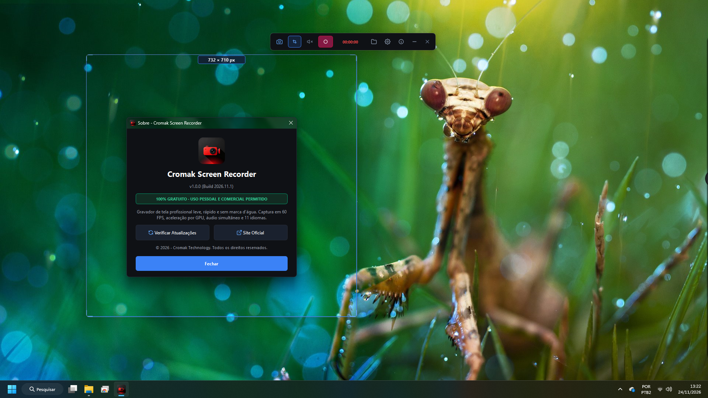
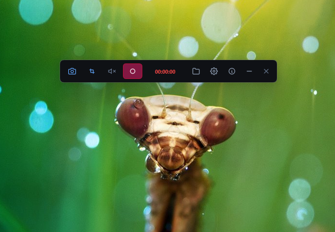
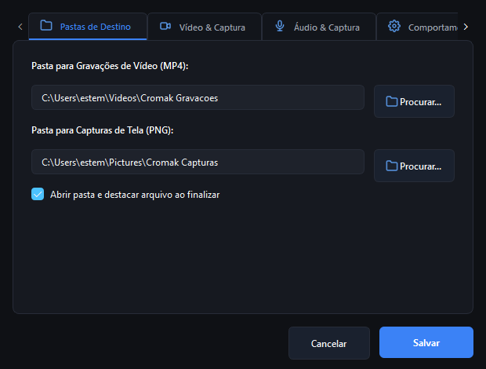
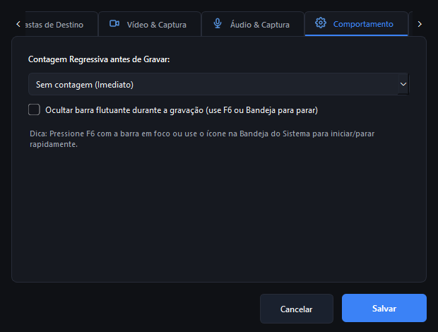
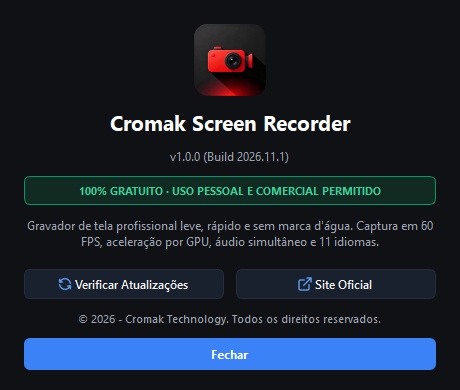

Cromak Screen Recorder
Gravação Profissional até 60 FPS, Áudio Duplo e Capturas sem Marca d'Água
Construído com motor FFmpeg embarcado e barra flutuante ultraleve em PyQt6. Grave sua tela inteira ou área selecionada com aceleração por placa de vídeo (NVENC, QuickSync, AMF), capture Microfone + Som do Sistema simultaneamente e tire screenshots instantâneos com cópia direta para a Área de Transferência.
Versão: 1.1.4 (Build: 2026.11.4) • Arquitetura 64-bits Nativa • Webcam PiP & Live RTMP

Engenharia de Estúdio em uma Barra Ultraleve
Tudo o que você precisa para gravar aulas, tutoriais, reuniões, jogos e demonstrações comerciais com qualidade máxima.
Barra Flutuante & Bandeja
Janela compacta independente que permanece acessível no topo ou na Bandeja do Sistema, com atalho rápido F6 para iniciar e encerrar gravações instantaneamente.
Aceleração por GPU (NVENC / QSV / AMF)
Grave em 15, 24, 30 ou 60 FPS usando sua placa NVIDIA, Intel ou AMD com baixíssimo uso de CPU, contando com fallback automático para libx264.
Áudio Duplo Simultâneo
Capture apenas Microfone, apenas Som do Sistema (Loopback) ou ambos misturados ao mesmo tempo em AAC/Opus até 320 kbps / 48 kHz.
Seleção de Área Estilo Snipping Tool
Escureça a tela para recortar qualquer região com precisão High-DPI, exiba a borda azul click-through durante a gravação ou use presets 1080p, 720p e 480p.
Screenshots & Clipboard Automático
Salve capturas de tela ou recortes em PNG, JPG ou WEBP com cópia automática para a Área de Transferência para colar direto com Ctrl+V.
Contagem Regressiva & Modo Discreto
Ative contagem regressiva de 3s ou 5s antes de gravar, oculte a barra flutuante automaticamente durante a captura e salve em MKV crash-safe.
Zero Marca d'Água · Liberado para Uso Pessoal e Comercial
Diferente de gravadores que limitam suas gravações a 5 minutos ou estampam um logotipo gigante no vídeo na versão gratuita, o Cromak Screen Recorder v1.0.0 entrega todos os recursos desbloqueados para uso doméstico, cursos, YouTube, treinamentos internos e projetos comerciais:
Comparativo Direto
Veja por que o Cromak Screen Recorder v1.0.0 supera tanto a ferramenta nativa do Windows quanto gravadores pagos cheios de restrições.
| Recursos & Liberdade | Ferramenta Nativa (Win 11) | Gravadores Pagos (Trial) | Cromak Screen Recorder v1.0.0 |
|---|---|---|---|
| Marca d'Água & Limite de Tempo | Sem marca d'água, porém básico | Logotipo gigante e corte em 5 min | Zero Marca d'Água & Tempo Ilimitado |
| Aceleração GPU (NVENC / QSV / AMF) | Sem seleção de encoder ou CRF | Bloqueado atrás de assinatura | NVENC, QSV, AMF + Fallback CPU x264 |
| Áudio Duplo (Mic + Som do Sistema) | Limitado e sem controle de bitrate | Disponível apenas no plano Pro | Mixagem Simultânea até 320 kbps / 48 kHz |
| Contêineres & Screenshots | Apenas MP4 e PNG simples | MP4 proprietário | MP4, MKV, WEBM + PNG/JPG/WEBP no Clipboard |
| Licença Comercial & Privacidade | Integrado ao Windows | Assinatura cara para empresas | 100% Gratuito para Uso Comercial & Privado |
Visão Geral do Layout
Clique nas imagens para expandir e conferir cada detalhe da interface profissional Cromak.

Barra Flutuante Independente
Controle rápido de Print, Área, Áudio, Gravação (F6), Pasta, Preferências e Sobre sempre acessível no topo.

Pastas & Abertura Automática
Defina diretórios personalizados para gravações de vídeo e capturas de tela, com destaque automático no Explorer.

Vídeo, Contêiner & GPU
Escolha 15 a 60 FPS, formatos MP4/MKV/WEBM, aceleração NVENC/QSV/AMF e qualidade CRF 18, 22 ou 26.

Áudio Studio & Screenshots
Bitrate de até 320k, amostragem 48 kHz, screenshots em PNG/JPG/WEBP e cópia automática para o Clipboard.

Contagem Regressiva & Modo Discreto
Timer regressivo de 3s ou 5s e opção de ocultar a barra flutuante durante a gravação com controle via F6 ou Bandeja.

Licença Comercial & Online Sync
Identidade transparente confirmando gratuidade para uso pessoal e comercial, com verificação oficial de atualizações.
Arquitetura FFmpeg + PyQt6
-
Captura Direta gdigrab & Precisão High-DPI
Converte coordenadas lógicas de seleção para pixels físicos do monitor automaticamente, garantindo gravações nítidas em telas 100%, 125%, 150% e 4K.
-
Gravação Segura & Mixagem DirectShow
Usa filtro
amixpara combinar Microfone e Som do Sistema sem dessincronização e fecha o arquivo MP4/MKV graciosamente preservando o átomomoov. -
Persistência em %APPDATA% & Online Sync
Preferências e logs rotativos armazenados em
%APPDATA%\Cromak Technology\Screen Recordercom verificação assíncrona de versões.
Privacidade e Licença Comercial
100% offline para gravações e capturas. Sem telemetria invasiva, sem conta obrigatória e livre para uso comercial em empresas, agências e criação de conteúdo.
Compatibilidade & 11 Idiomas Nativos
Instalador completo e autônomo com FFmpeg já integrado. Troque entre 11 idiomas ao vivo sem reiniciar o programa.
Faça o Download
O Cromak Screen Recorder v1.0.0 é 100% gratuito para uso pessoal e comercial. Se ele ajuda o seu trabalho, você pode apoiar o projeto.
Uso Pessoal e Comercial
- Software Completo v1.0.0 + FFmpeg
- Até 60 FPS + NVENC / QSV / AMF
- Áudio Duplo (Mic + Som do Sistema)
- Sem Marca d'Água & Tempo Ilimitado
- 11 Idiomas Nativos & Online Sync
Apoiador do Projeto
- O software é idêntico, mas:
- Você incentiva novos updates
- Ajuda a manter o projeto e o site vivos
- Nosso eterno agradecimento
Distribuído com orgulho pela Cromak Technology.